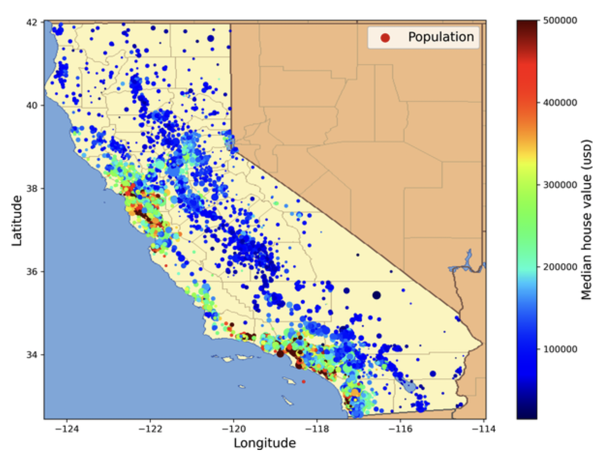

Updates
- Use the office hours wisely
- I am not providing an overview
- be clear what's the purpose of the meetings
- Practice
- provide constructive feedback to your mates
How much have you learned?
You might be asked your conceptual understanding without data
We will be launching work-environment change programms for our workers. How would you evaluate this program?
You might be asked the similar question using the data
End-to-End Project
- Consider the role of data scientist at a real estate company
- The goal is to illustrate the main steps of a learning project, not to learn anything about the real estate business
- Application of ML
- Here are the main steps we will walk through
- Look at the big picture.
- Get the data.
- Explore and visualize the data to gain insights.
- Prepare the data for machine learning algorithms.
- Select a model and train it.
- Fine-tune your model.
- Present your solution.
- Launch, monitor, and maintain your system.

- Use the California Housing Prices dataset from the StatLib repository
- Your first task is to use California census data to build a model of housing prices in the state
- block group in California
- The first question to ask your boss is what exactly the business objective is
- it will determine how you frame the problem
- which algorithms you will select
- which performance measure you will use to evaluate your model
- how much effort you will spend tweaking it
The end goal is to determine whether it is worth investing in a given area
Your model's output (a prediction of a district's median housing price) will be fed to another machine learning system, along with many other signals
The next question to ask your boss is what the current solution looks like if any
The current situation will often give you a reference for performance, as well as insights on how to solve the problem
Your boss answers that the district housing prices are currently estimated manually by experts using complex rules
This is costly and time-consuming, and their estimates are not great; in cases where they manage to find out the actual median housing price, they often realize that their estimates were off by more than 30%
Now you see the problem in the short and long run
Find a meta data and plan a sequence of data processing carefully
Ask advice! Do not start from a scratch.
With all this information, you are now ready to start designing your system
- Frame the model using data and question
- Supervised learning vs. unsupervised learning
- Target (outcome) variable is in data?
- Regression vs. classification
- online learning vs. batch learning
- flow of data coming into the system?
Your next step is to select a performance measure
- A typical performance measure for regression problems is the root mean square error (RMSE)
- gives an idea of how much error the system typically makes in its predictions, with a higher weight given to large errors
- $\text{RMSE}(X,h)=\sqrt{\frac{1}{n}\sum_{i=1}^{m}(h(x^{(i)})-y^{(i)})^2}$
- test set
- Formally, supervised learning requires the following
- model
- loss function
- traning data
- optimization algorithm
A computer program is said to learn from experience E with respect to some task T and some performance measure P, if its performance on T, as measured by P, improves with experience E.
You will have hand-on experience for ML classes
Why Use Machine Learning?
- Consider how you would write a spam filter
- First you would examine what spam typically looks like
- some keywords: eg. free offer
- You would write a detection algorithm for each of the patterns that you noticed
- You would test your program and repeat steps 1 and 2 until it was good enough to launch
- Since the problem is difficult, your program will likely become a long list of complex rules—pretty hard to maintain
In contrast, a spam filter based on machine learning techniques automatically learns which words and phrases are good predictors of spam by detecting unusually frequent patterns of words in the spam examples compared to the ham examples
What if spammers notice that all their emails containing “4U” are blocked? They might start writing “For U” instead. A spam filter using traditional programming techniques would need to be updated to flag “For U” emails. If spammers keep working around your spam filter, you will need to keep writing new rules forever
In contrast, a spam filter based on machine learning techniques automatically notices that “For U” has become unusually frequent in spam flagged by users, and it starts flagging them without your intervention
Examples
- Image recognition
- Information extraction
- Word filtering
- Creating a chatbot or a personal assistant